class: center, middle # DevOps --- # Agenda 1. About us 2. Devops in theory 3. Devops toolchain 4. Tooling: lay of the land 5. Code examples of tools used in demo 6. Live demo --- # Why DevOps? 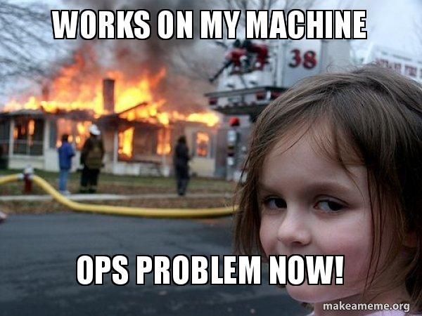 --- # DevOps analogy 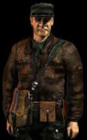 --- # What is DevOps? 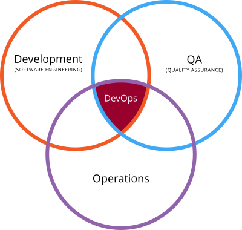 * It's an organizational and culture change that, at least, involve all technical teams in a company * Has five key pillars to measure success: * 1) Reduce organizational silos * 2) Accept failure as normal * 3) Implement gradual changes * 4) Leverage tooling and automation * 5) Measure everything --- # What does that mean in practice? * Operations, Development and Quality Assurance working together to deploy a change to production as fast as possible * Use a toolchain to provide a common language amongst departments 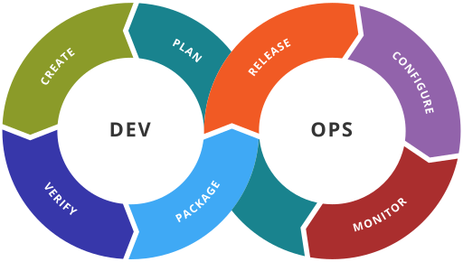 1. https://en.wikipedia.org/wiki/DevOps --- # Devops toolchain | Stage | Description | |-------|-------------| | Code | code development and review, source code management tools, code merging | | Build | continuous integration tools, build status | | Test | continuous testing tools that provide feedback on business risks | | Package | artifact repository, application pre-deployment staging | | Release | change management, release approvals, release automation | | Configure | infrastructure configuration and management, Infrastructure as Code tools | | Monitor | applications performance monitoring, end–user experience | 1. https://en.wikipedia.org/wiki/DevOps_toolchain --- # What DevOps is certainly not 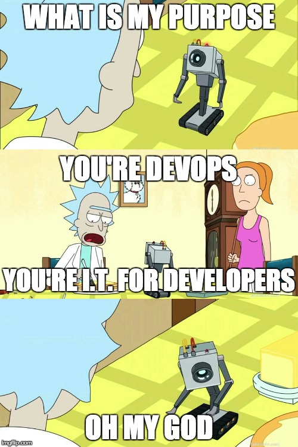 --- # What DevOps is certainly not 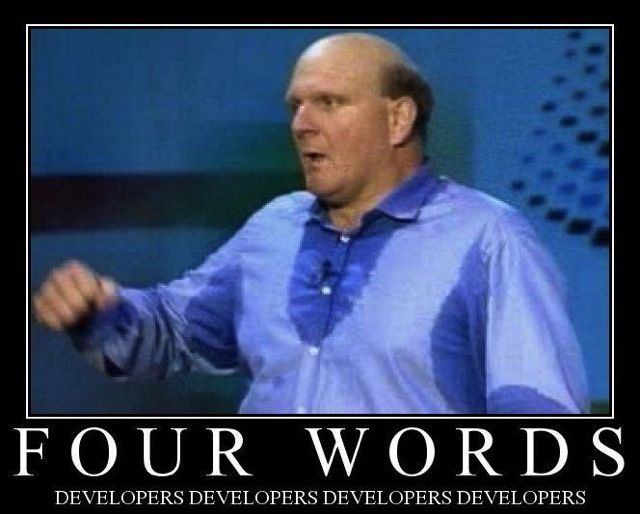 --- # DevOps criticism 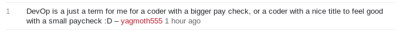 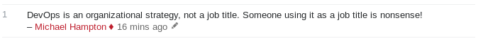 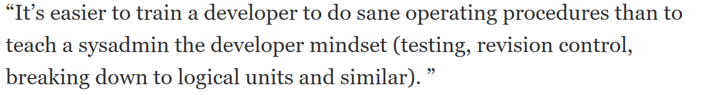 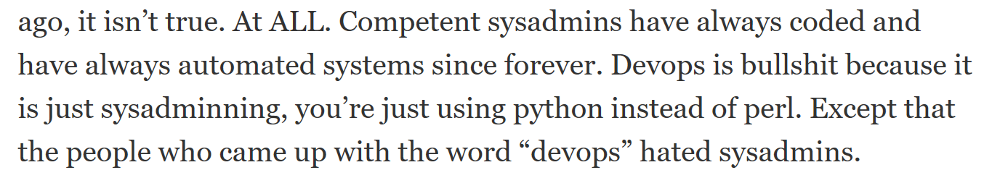 --- # DevOps success stories * QA: I am very happy that I can create a new test enviroment using Jenkins. * Dev: I cannot run any more VMs. Shall I start with docker? * Ops: Boss on Friday evening: I have an important meeting upcoming Monday. Is the demo system ready? --- class: center, middle # Tooling --- # Lay of the land 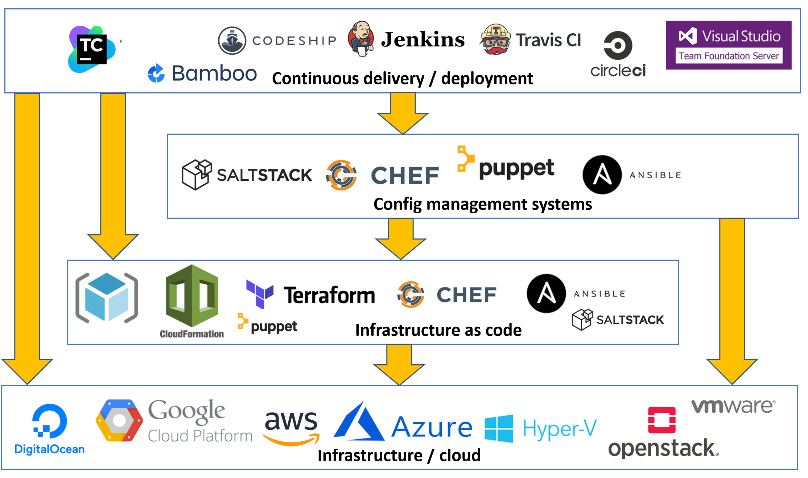 --- # Tools used for the demo 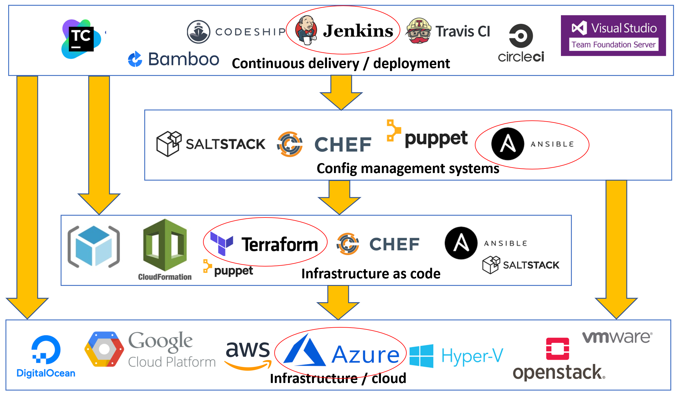 --- # Layout of demo 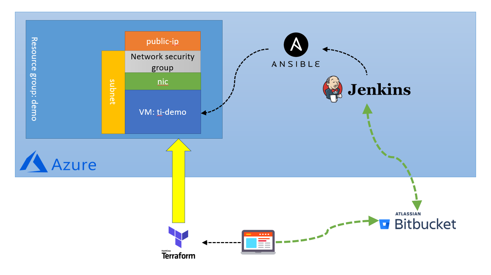 --- # Alternative 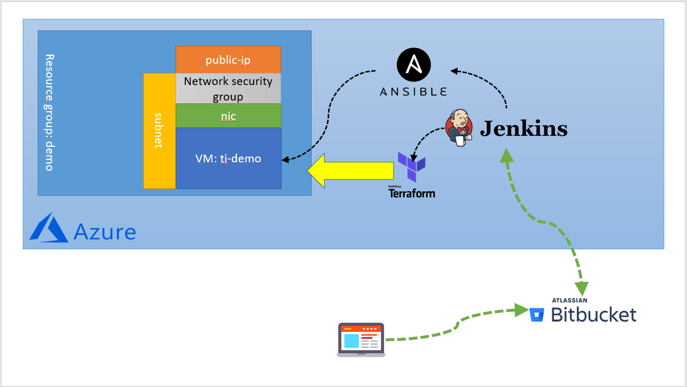 --- class: center, middle # Code examples --- ### Terraform ```hcl # The basic provider to run against. provider "azurerm" { version = "~> 1.2" } # Can also be put in a separate file called 'variables.tf' variable "location" {} variable "resource_group" {} # Create the Azure resource group resource "azurerm_resource_group" "demo" { name = "${var.resource_group}" location = "${var.location}" } # Create a virtual network resource "azurerm_virtual_network" "demo-vnet" { name = "demo-vnet" address_space = ["10.2.0.0/16"] resource_group_name = "${azurerm_resource_group.demo.name}" location = "${azurerm_resource_group.demo.location}" } # Create a subnet resource "azurerm_subnet" "demo-subnet" { name = "demo-subnet" address_prefix = "10.2.1.0/24" resource_group_name = "${azurerm_resource_group.demo.name}" virtual_network_name = "${azurerm_virtual_network.demo-vnet.name}" } ``` --- ### Ansible ```YAML --- - name: Install epel yum repository yum: name: epel-release state: installed - name: Install nginx yum: name: nginx state: latest update_cache: yes - name: Copy over index.html copy: src: ../files/index.html dest: /usr/share/nginx/html/index.html register: indexhtml - name: restart nginx service: name=nginx state=restarted when: indexhtml.changed ``` --- ### Jenkins (declarative pipeline) ```groovy pipeline { ... // Ask for user input parameters { string( name: 'branch', defaultValue: 'refs/heads/master', description: 'The branch or tag. Must be specified in full format, so valid values are "refs/tags/v1.5.0" or "refs/heads/hotfix/v1.5.1"' ) } // This pipeline can run on any agent agent any // Here start the actual stages stages { stage('Checkout Ansible repo') { // A stage can contain one or more steps steps { ... } } stage('Run ansible playbook') { steps { ... } } } } ``` --- class: center, middle # Demo! --- class: center, middle # Questions?